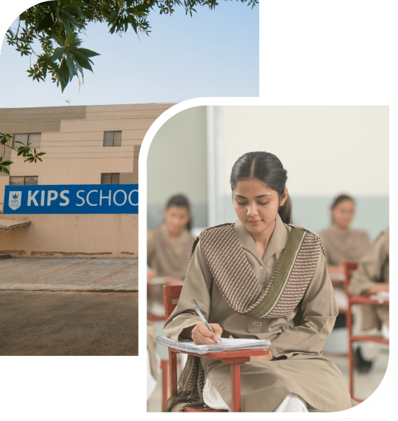
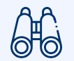
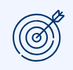
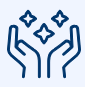

KIPS is not merely an educational institute, it is a phenomenon. Over the last three decades, KIPS has earned outstanding success through its extensive network of Schools, Colleges, Evening Coaching, Entry Tests Preparation, Competitive Exam Preparation, Foreign Tests Preparation, School of Languages, and Publications. It has a league of successful students and professionals throughout the country and beyond.
An immensely competent faculty, purpose-built campuses with state-of the-art facilities, and an elaborate quality assurance system are some of the ingredients of KIPS’ success.


Developing the nation through quality education in such a way to uplift the image of Pakistan and Pakistanis among the Muslim and International World in Science, Research, Technology and Arts

KIPS has the mission to set the new and healthy trends of competition for the students and professionals, for all walks of life by delivering holistic education to the students for a radiant future and ensuring grooming of students and helping them to analyze their strengths, weaknesses, opportunities, and threats to meet the upcoming challenges for a better and prosperous future through a well-bonded rectangular collaboration among the students, teachers, parents and the management.
